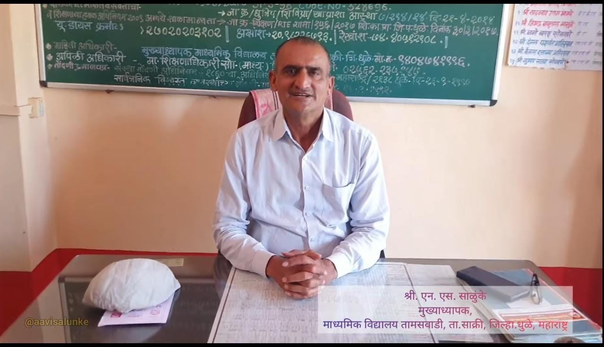
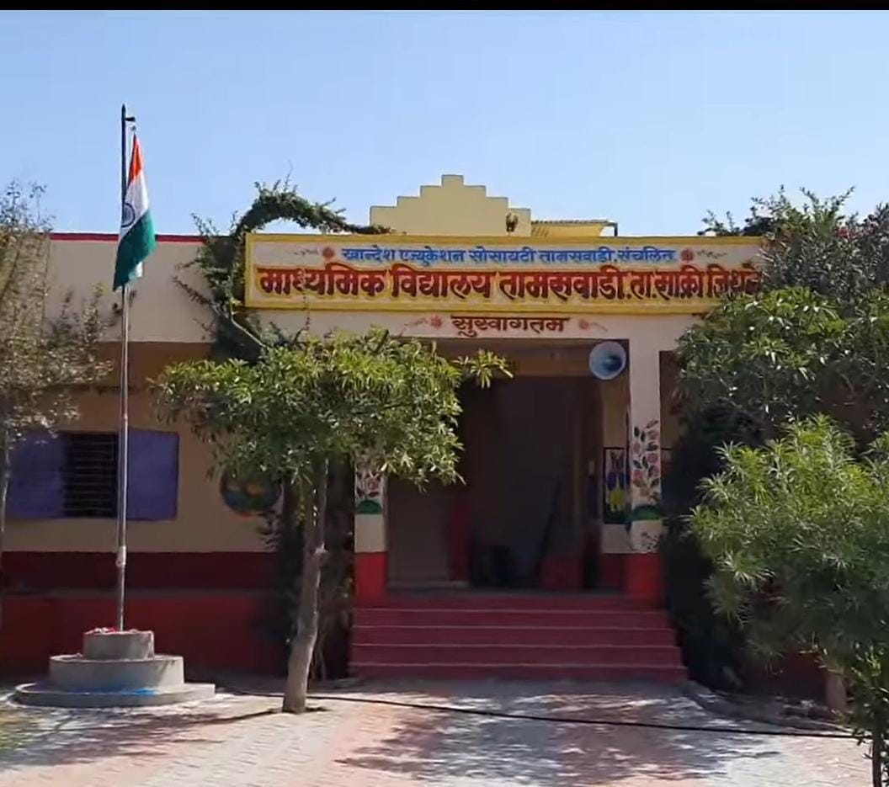

दिनांक 29/04/2023 रोजी आबासाहेब श्री N.S.Salunke सर म्हंजे माझे पप्पा वयोमानानुसर व शासनाच्या नियमानुसार मुख्याध्यापक या पदावरून सेवानिवृत्त झाले.
1990 च्या दशकात देश प्रगती करत होता, पण अजूनही समाजातले खूप सारे घटक मुख्य प्रवाहाशी जोडले गेले नव्हते. अजूनही समाज अशिक्षित, बेरोजगारी ने त्रस्त होता. त्याच काळात एका गरीब घरात एक तरुण काहीतरी करू पाहत होता, वडील शेतकरी आणि हलाखीचे जीवन या सगळ्यातून ग्रॅज्युएशन घेऊन फर्स्ट क्लास झालेला तरुण आतून तळमत होता. आपण समाजाचं देणं लागतो, समजासाठी काहीतरी करता यावं या विचारांनी प्रेरित होता. जसं जोहरीला हिऱ्याची ओळख असते तसाच अजून एक तरुण दूर कुठेतरी मुंबई नगरीत याच विचारांनी प्रभावित होते. एक खेडेगावात होता तर एक मुंबई मेट्रो सिटी मध्ये, दोघांमध्ये खूप अंतर होतं पण ते एकाच विचाराने प्रेरित होते. जोहरिला हिऱ्याची आणि हिऱ्याला जोहरची भेट होण गरजेचं होत. दोघंही एकमेकांशिवाय अपूर्ण होते.
जोहरीला हिरा सापडला

आणि तो दिवस उजाडला, मुंबईहून अण्णासाहेब श्री प्रकाश सोनवणे यांना हिरारुपाने आबासाहेब श्री. निंबा साळुंके भेटले. आणि त्या दिवसापासून तर आजतागायत ती दोघं समाजासाठी शिक्षणाच्या माध्यमातून सेवा करत राहिले आणि राहतील. सेवा म्हटली तर तिथे निवृत्ती येते. आणि निवृत्त येते तेंव्हा आठवतो आजपर्यंत केलेला लेखाजोखा.
खानदेश एज्युकेशन माध्यमिक विद्यालय तमासवाडी या शाळेचा जन्मचमुळी संघर्षातून झाला. शाळेच्या पहिल्या दिवसापासून आबासाहेब मुख्याध्यापक पदावर विराजमान झाले आणि आजपर्यंत त्या पदाला सन्मान होईल असा कार्य करत राहिले. मुख्याध्यापक म्हणून जवळपास 33 वर्षे त्यांना सेवा करायचा लाभ मिळाला. या 33 वर्षात त्यांनी खूप लोकांच्या आयुष्याला कलाटणी दिली.
संत रामदास महराज म्हणतात "जे जे आपणासी ठावे ते इतरांसी सांगावे, शहाणे करून सोडावे सकल जन". या उक्तीचा जणू त्यांनी जगण्याचं धेय्य करून टाकलं. या सेवे काळात वेगवेगळी प्रश्न सोडवली, उत्तम विद्यार्थी घडवले, शाळा सुंदर केली, अवघड प्रश्न सहज सोडवले.
शाळा एक वटवृक्ष

शाळा आणि तमासवाडी गाव यांच्यासोबतच त्यांचं नातं न तुटणार झाला. प्रत्येकाला हेडसर म्हणून प्रख्यात असलेले आबासाहेब जनुकाही त्यांच्यातले होऊन गेले. त्यांनी केलेल्या अश्या असंख्य कामांची यादीच माझ्या तोंडपाठ आहे. या सगळ्या प्रवाहात त्यांनी खूप माणसे जोडली, ज्यांना आबासाहेबांकडून घेता आलं आज त्यांच आयुष्य खूप सुंदर झाल. घरी कोणीही आलअसेल आणि तो रिकाम्या हाती गेला असेल असा कधीच झाल नाही. जो कोणी आला त्याच्या प्रश्नांना उत्तर, अडचणीची सहज उलगड घेतल्याशिवाय परत पाठवलं नसेल.
या त्यांच्या सगळ्या प्रवासात जर कोणी त्यांच्या पाठीशी खंभिरपणे उभी होती तर ती म्हंजे माझी आई सौ. जयश्री निंबा साळुंके. दोघांनी आयुष्याची सांगड एवढी सुंदर घालून घेतली की तिच त्यांची ओळख होऊन जाते.
आज जरी आबांची सेवानिवृत्त झाली असेल पण त्यांनी लावलेला शिक्षणाचं बीज आज एक मोठा वटवृक्ष झालंय. आणि याची त्यांना आयुष्भर समाधान असेल. तरुण वयात ज्या विचारांनी प्रेरित झाले होते आज तेच विचार घेऊन निवृत्त होऊन आणि परत नवीन भूमिका घेऊन समाजासाठी त्याच एनर्जी ने सज्ज राहणे म्हंजे दैविक वारसा असावा अशी प्रचिती येते.